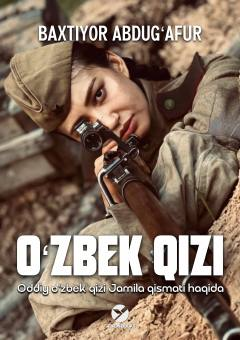

OQUrush maydonida jasorat ko'rsatgan o'zbek qizining fojiali taqdiri haqidagi qissa.
Asar Ikkinchi jahon urushi davrida o'z vatanini himoya qilish uchun kurashgan Jamila ismli o'zbek qizining fojiali taqdiri haqida hikoya qiladi. Qahramon urush maydonidagi jasorati va qiyinchiliklariga qaramay, sovet tuzumining adolatsiz jazo mashinasi qurboniga aylanadi. Kitob inson qadri, urush dahshatlari va adolatning qaror topishi kabi mavzularni qamrab oladi.